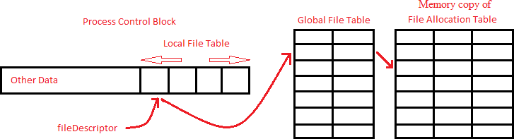

Scratchpad
There is a specific page of the memory which is reserved to store temporary data. This page is known as the Scratchpad. The scratchpad is required since any block of the disk cannot be accessed directly by a process. It has to be present in the memory for access. Hence, any disk block that has to be read or written into is first brought into the scratchpad. It is then read or modified and written back into the disk (if required).
The page 1 of the memory is used as the scratchpad. Once the OS has booted up there is no need for the OS startup code. So this page can be reused as the scratchpad.
Global File Table and Local File Table
Before explaining the system calls, we introduce two data structures : Global File Table and Local File Table.
Modifications in the OS Startup Code
- The Global File Table in the memory must be initialised with NULL values.
- The Local File Table entries in the PCB of the INIT process must be initialised with NULL values.
File System Calls
File system calls are used by a process when it has to create, delete or manipulate Data files that reside on the disk(file system). There are seven file system calls. An interrupt is associated with each system call. All the necessary arguments for a system call are available in the user stack with the system call number as the last argument.
Interrupt specifications for different File system calls are as follows:
INT 1
The file system calls Create and Delete invoke INT 1. INT 1 handles these system calls as follows.
- Create : This system call is used to create a new file in the file system whose name is specified in the argument.
Syntax : int Create(fileName)Syscall no : 1
- First of all, the memory copy of the FAT is searched for a free entry. If no free entry is found, an appropriate error code is returned.
- Next, the memory copy of the disk free list is searched to find a free block number.If no free block is found, an appropriate error code is returned. This block is used as the basic block of the file to be created.
- The fileName specified in the argument and the free block number obtained in the previous step are stored in the file name field and basic block number field of the free FAT entry, respectively.
- The file size field of the FAT entry is initialized to zero.
- Each entry of the block list in the basic block is initialized to zero.
- The updated copies of FAT and disk free list in the memory are committed to the disk.
- The return value of this system call is 0 in case of success and the appropriate error code in case of failure.
- Delete : This system call is used to delete the file from the file system whose name is specified in the argument.
Syntax : int Delete(fileName)Syscall no : 2
- The memory copy of the FAT is searched using the fileName to get the corresponding FAT entry. If no entry is found, an appropriate error code is returned.
- If the file is already open an appropriate error code is returned. We adopt the following steps to check if the file is open.
- The FAT index entry of each global file table entry is used to fetch the filename of the corresponding open file from the memory copy of the FAT.
- Each of the filenames obtained in the previous step is compared with the fileName. If match is found, we conclude that the file is currently in open.
- The basic block number field in this FAT entry obtained, is then used to load the basic block of the file into the scratchpad.
- Each entry in the block list of the basic block is used to find the data blocks of the file. Then, entries in the memory copy of the disk free list corresponding to these data blocks are set to zero, thereby freeing them.
- Finally, the FAT entry of the file is removed.
- The updated copies of FAT and disk free list in the memory are committed to the disk.
- The return value of this system call is 0 in case of success and the appropriate error code in case of failure.
INT 2
The file system calls Open and Close invoke INT 2. INT 2 handles these system calls as follows.
- Open : This system call is used to open an existing file whose name is specified in the argument.
Syntax : int Open(fileName)Syscall no : 3
- First of all, a free entry is searched in the local file table of the process. If there are no free entries, in the case where a process already has 4 open files, an appropriate error code is returned.
- Then, the global file table is searched for a free entry. If there is no free entry, an appropriate error code is returned else a new global file table entry is created and the fields are filled with appropriate values in the following manner:
- The memory copy of FAT is searched using the fileName and the corresponding index of that file in the FAT is stored as the FAT index. If the file does not have an entry in the FAT, an appropriate error code is returned.
- The lseek field is set to zero.
- The index of this global file table entry is stored in its local file table.
- The index of this entry in the local file table is returned as a return value of the system call. This is known as the file descriptor.
- Close : This system call is used to close an open file. The file can only be closed by the process which opened it or by its children.
Syntax : int Close(fileDescriptor)Syscall no : 4
- The fileDescriptor is used first to access the local file table entry of the file. An appropriate error code is returned if the fileDescriptor is out of the range specified.
- The global file table entry indexed by this local file table entry is removed.
- The local file table entry of the process is then removed.
- The return value of this system call is 0 in case of success and the appropriate error code in case of failure.
INT 3
The file system calls Read and Seek invoke INT 3. INT 3 handles these system calls as follows.
- Seek : This system call is used to change the current value of the seek position in the global file table entry of a file.
Syntax : int Seek(fileDescriptor, lseek)Syscall no : 5
- The fileDescriptor is used first to access the local file table entry of the file. An appropriate error code is returned if the fileDescriptor is out of the range specified.
- This local file table entry is then used to access the global file table entry of the file.
- Then the FAT index field in the global file table entry is used to access the FAT entry of the file.
- The file size got from this FAT entry is checked to be greater than lseek. Otherwise an appropriate error code is returned.
- The lseek field in the GFT entry is then changed to the new value specified in the argument (lseek).
- The return value of this system call is 0 in case of success and the appropriate error code in case of failure.
- Read : This system call is used to read data from an open file.
Syntax : int Read(fileDescriptor, mem_loc, numWords)Syscall no : 6- First of all, the basic block of the file specified by the fileDescriptor is loaded in the scratchpad. This is done in the following way:
- The fileDescriptor is used first to access the local file table entry of the file. An appropriate error is returned if the fileDescriptor is out of the range specified.
- This local file table entry is then used to access the global file table entry of the file.
- Then the FAT index field in the global file table entry is used to access the FAT entry of the file.
- The basic block address present in the FAT entry is then used to load the basic block (containing block list and file header info) into the scratchpad.
- The lseek position present in the GFT entry and numWords are used to index the block list in the basic block to find the address of the block(s) to be read.
- Each time the block to be read is loaded into the scratchpad before reading its contents.
- The contents read are then copied into the buffer that is specified as an argument to the system call (mem_loc). If the mem_loc is out of the address space of the process, an appropriate error code is returned.
- The return value of this system call is the number of words successfully read. In case of an error, an appropriate error code is returned.

Diagram showing the method of accessing FAT entryINT 4
The file system call Write invoke INT 4. INT 4 handles these system calls as follows.
Write : This system call is used to write data into an open file.Syntax : int Write(fileDescriptor, mem_loc, numWords)Syscall no : 7- First of all, the basic block of the file specified by the fileDescriptor is loaded into the scratchpad. This is done in the following way:
- The fileDescriptor is used first to access the local file table entry of the file. An appropriate error is returned if the fileDescriptor is out of the range specified.
- This local file table entry is then used to access the global file table entry of the file.
- Then the FAT index field in the global file table entry is used to access the FAT entry of the file.
- The basic block address present in the FAT entry is then used load the basic block (containing block list and file header info) into the scratchpad.
- The lseek position present in the GFT entry and numWords are used to index the block list in the basic block to find the block numbers of the block(s) to be written into.
- Each time the block to be written into is loaded into the scratchpad before performing the write operation.
- After loading the specified block, the content to be written is copied from the user memory location (mem_loc) into this block. If mem_loc is out of the address space of the process, an appropriate error code is returned.
- If the write operation exhausts all the currently allocated blocks, new blocks are allocated as required. This is done in the following way.
- The memory copy of the disk free list is used to get the block number of a free block.
- A new basic block entry is created using this free block number and added to the block list of the basic block. Successive write operations are then performed the usual way.
- Once all the write operations are over for that block, it is stored back into the disk.
- The updated copies of FAT and disk free list in the memory are committed to the disk.
- The return value of this system call is the number of words successfully written. In case of an error, an appropriate error code is returned.